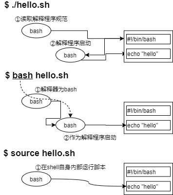

第五章 执行脚本和任务¶
5.1 如何运行shell脚本¶
什么是shell脚本¶
shell脚本是一个程序（脚本），它使用OS shell来执行多项操作。通过在shell脚本中编写复杂的条件或复杂的重复操作，可以简化用户的操作。
shell脚本具有以下特征：
解释型语言
解释器解释并执行脚本。在第一行中定义要执行的解释器。您编写的脚本可以由解释器进行解释和执行，而无需进行编译。
批处理功能
您可以将终端上手动输入的一组命令写入shell脚本，然后批量执行这些命令。
易于调试
shell脚本是一种解释程序语言，允许您编辑程序以进行运行和验证，且允许使用“-e”和“-x”选项进行调试。
作为编程语言的功能
shell脚本提供了一种编程语言，例如变量和数组，条件分支和迭代等控制语法和函数定义，可以帮助您更有效的编写操作。
注解
本文档不包含shell脚本语言。只介绍如何运行提供的脚本。
Shebang¶
在计算领域中，Shebang（也称为Hashbang）是一个由井号和叹号构成的字符序列#!，其出现在文本文件的第一行的前两个字符。 在文件中存在Shebang的情况下，类Unix操作系统的程序加载器会分析Shebang后的内容，将这些内容作为解释器指令，并调用该指令，并将载有Shebang的文件路径作为该解释器的参数。
例如，以指令 #!/bin/sh 开头的文件在执行时会实际调用 /bin/sh 程序（通常是Bourne shell或兼容的shell，例如bash、dash等）来执行。这行内容也是shell脚本的标准起始行。
Shebang |
执行解释程序 |
|---|---|
#!/bin/sh |
Bourne壳 |
#!/bin/bash |
bash（Bourne Again Shell） |
#!/usr/bin/perl |
Perl语言 |
#!/usr/bin/python |
Python语言 |
运行shell脚本¶
shell脚本由三种执行方式（四种表示方法）。运行结果保持不变，但在当前shell或子shell上运行或读取Shebang上存在差异。在子shell中运行意味着另一个shell将启动并在另一个进程中运行。
No |
启动类型 |
执行示例 |
补充说明 |
|---|---|---|---|
① |
./shell脚本 |
|
读取Shebang并在子shell中启动解释器 |
脚本文件必须具有执行权限 |
|||
② |
bash shell脚本 |
|
bash命令在子shell中作为解释器启动并运行脚本 |
因此，它不读取Shebang |
|||
脚本文件不需要执行权限 |
|||
③ |
. shell脚本 |
|
当前shell运行脚本 |
因此，它不读取Shebang |
|||
脚本文件不需要执行权限 |
|||
④ |
source shell脚本 |
|
与“. Shell脚本”方式等同 |
例如，如果编写了一个使用export命令设置环境变量的脚本，则上表的运行方式②会将环境变量设置为子shell环境的环境变量，并在子shell结束时（脚本结束时）将其删除。如果要将其设置为当前命令提示符下的环境变量，请使用③和④的方式。
脚本文件权限¶
检查并修改解脚本文件权限，使shell脚本可以执行。
权限设置
要确保运行的用户具有读取权限。此外，您还可以使用上表中的方式①直接运行脚本。
扩展名称
可选，通常使用“.sh”来表示shell脚本。
如第二章所述，Linux使用各种命令和shell脚本。在本节中，您将使用自己的shell脚本来确定如何执行该脚本。请注意，以下shell脚本文件保存在user01的起始目录 /home/user01 中并运行。
以下shell脚本“hello.sh”将字符串显示在显示器上：第一行是Shebang的定义，第三行是注释行。第四行echo命令在显示器上显示指定的字符串或变量值。
$ cat hello.sh
#!/bin/bash
# 注释行示例
echo 'hello world.'
以下示例说明如何执行上述shell脚本“hello.sh”。
$ chmod a+x hello.sh
$ ./hello.sh
hello world.
$ bash hello.sh
hello world.
$ . hello.sh
hello world.
$ source hello.sh
hello world.
运行时选项和参数（特殊变量）¶
使用bash命令读取和运行脚本时，可以指定选项。用于设置或调试是否加载配置文件。主要选项包括：
选项 |
说明 |
|---|---|
–norc |
不加载用户的配置文件 |
–rcfile 文件名称 |
将指定的文件作为配置文件，而不加载用户配置文件 |
-n |
检查语法错误 |
-e |
如果脚本遇到运行时错误，则返回错误内容并停止处理 |
-x |
在命令行中显示shell脚本执行的每一步操作。显示运行时的错误。 |
指定选项后，此选项才可用。使用bash命令为bash shell指定选项。
$ cat opthin.sh
#!/bin/bash
echo 'script started.' # 用于标准输出的命令
foo # 因为不存在这样的命令，所以这里在运行时就出错了
date # 用于显示日期的命令
echo 'script was done'
以下示例显示了不带选项的bash命令的结果。虽然出现了错误，但您可以看到它一直运行到最后。
$ bash option.sh
script started.
option.sh: line 4: foo: command not found
Mon Mar 2 13:29:49 CST 2020
script was done
以下示例使用“-e”选项执行。在第四行中，您会看到脚本已经停止，出现错误。
$ bash -e option.sh
script started.
option.sh: line 4: foo: command not found
以下示例中使用“-x”选项执行。显示每个步骤的结果。步骤活动显示为活动。您还可以看到，即使出现了错误也会继续。
$ bash -x option.sh
+ echo 'script started.'
script started.
+ foo
option.sh: line 4: foo: command not found
+ date
Mon Mar 2 13:32:18 CST 2020
+ echo 'script was done'
script was done
参数和特殊变量¶
shell脚本参数存储在shell脚本的特殊变量中。特殊变量存储参数信息，执行结果或进程号。“$0”和“$1”等是特殊变量。“$0”表示运行中的文件名称，“$1” 和更大数值的参数表示运行时的参数。
特殊参数 |
说明 |
|---|---|
$0 |
shell脚本文件名称 |
$1~$n |
$1是第一个参数、$2是第二个参数、$n是第n个参数 |
$# |
存储参数数量 |
$* |
将所有非$0的参数存储为一个字符串 |
$? |
退出状态。shell脚本成功时存储为“0”，失败时存储为“1” |
$$ |
存储运行时的进程号（PID） |
以下示例使用两个参数运行shell脚本args.sh以显示特殊变量：
$ cat args.sh
#!/bin/bash
echo "文件名称：$0"
echo "第一个参数：$1"
echo "第二个参数：$2"
echo "参数数量：$#"
echo "全部参数：$*"
echo "结束返回值：$?"
echo "进程编号：$$"
$ bash args.sh hello bye
文件名称：args.sh
第一个参数：hello
第二个参数：bye
参数数量：2
全部参数：hello bye
结束返回值：0
进程编号：3420
5.2 作业调度¶
什么是作业调度？¶
作业调度(cron)提供了在指定时间执行某些命令的功能。用户通过crontab命令设置要定期运行的命令和时间。到了指定时间，crond守护进程将执行指定的命令。
cron功能也可用于系统维护。通过从cron启动的anacron，可以定期执行系统维护命令，如定期更新locate命令引用的文件搜索数据库或定期更换日志文件。at和batch只执行一次指定的命令。
要启动、停止和检查crond守护进程的状态，请按如下所示运行 systemctl 命令：
# systemctl status crond ⬅ ①
● crond.service - Command Scheduler
Loaded: loaded (/usr/lib/systemd/system/crond.service; enabled; vendor preset: enabled)
Active: inactive (dead) since Mon 2020-03-02 13:57:34 CST; 3s ago
Process: 537 ExecStart=/usr/sbin/crond -n $CRONDARGS (code=exited, status=0/SUCCESS)
Main PID: 537 (code=exited, status=0/SUCCESS)
Mar 02 13:57:34 zabbix-server.bih.cn systemd[1]: Stopping Command Scheduler...
Mar 02 13:57:34 zabbix-server.bih.cn systemd[1]: Stopped Command Scheduler.
Warning: Journal has been rotated since unit was started. Log output is incomplete or unavailable.
# systemctl start crond ⬅ ②
# systemctl status crond ⬅ ③
● crond.service - Command Scheduler
Loaded: loaded (/usr/lib/systemd/system/crond.service; enabled; vendor preset: enabled)
Active: active (running) since Mon 2020-03-02 13:57:47 CST; 1s ago
Main PID: 26255 (crond)
CGroup: /system.slice/crond.service
└─26255 /usr/sbin/crond -n
Mar 02 13:57:47 zabbix-server.bih.cn systemd[1]: Started Command Scheduler.
Mar 02 13:57:47 zabbix-server.bih.cn systemd[1]: Starting Command Scheduler...
Mar 02 13:57:47 zabbix-server.bih.cn crond[26255]: (CRON) INFO (RANDOM_DELAY will be scaled with factor 40% if used.)
Mar 02 13:57:47 zabbix-server.bih.cn crond[26255]: (CRON) INFO (running with inotify support)
Mar 02 13:57:47 zabbix-server.bih.cn crond[26255]: (CRON) INFO (@reboot jobs will be run at computer's startup.)
# systemctl stop crond ⬅ ④
# systemctl is-enabled crond ⬅ ⑤
enabled
① 检查状态。在此示例中，crond守护进程当前状态已经停止，如 Active: inactive (dead) 所示。
② 启动 crond 守护进程
③ 检查状态。您将看到 crond 守护进程已经启动，显示为 Active: active (running)
④ 停止 crond 守护进程
⑤ 使用 is-enabled 检验 crond 守护进程是否设置为自动启动
如果设置了自动启动设置，则显示为“enabled’；如果没有设置自动启动设置，则显示为“disabled”。如果没有设置自动启动设置，则可以在 systemctl enable crond 中设置自动启动设置。
crontab文件¶
cron设置需要在配置文件crontab中写入执行命令。在此文件中注册“何时”、“执行那些命令”。crontab文件由两种工作方式：
用户crontab文件
为用户提供的crontab文件。在
/var/spool/cron目录下注册与每个用户的用户名称相同的文件，但是/var/spool/cron目录下的权限不允许创建普通用户权限的文件。因此，每个用户都需要使用 crontab 命令编辑自己的 crontab 文件。此外，用户的 crontab 文件由六个字段组成，这些字段以空格（空字符串）``分 时 天 月 周 命令`` 来定义。系统 crontab 文件
crontab 文件用于保存和管理系统所需的作业。它位于
/etc/crontab，除了与用户 crontab 相同的的六个字段之外，还加入了一个额外的用户名称的字段：分 时 天 月 周 用户名 命令，以指定要执行的用户名，并以空格作为分隔符。
系统的 crontab 文件与用户的 crontab 文件相同，但第六个字段的用户名称有所不同。
格式详细信息将在后面介绍：
以下是 /etc/crontab 文件的示例：在安装时， /etc/crontab 注释掉了变量设置。
# /etc/crontab: system-wide crontab
# Unlike any other crontab you don't have to run the `crontab'
# command to install the new version when you edit this file
# and files in /etc/cron.d. These files also have username fields,
# that none of the other crontabs do.
SHELL=/bin/sh PATH=/usr/local/sbin:/usr/local/bin:/sbin:/bin:/usr/sbin:/usr/bin
# m h dom mon dow user command 17 * * * * root cd / && run-parts –report /etc/cron.hourly 25 6 * * * root test -x /usr/sbin/anacron || ( cd / && run-parts –report /etc/cron.daily ) 47 6 * * 7 root test -x /usr/sbin/anacron || ( cd / && run-parts –report /etc/cron.weekly ) 52 6 1 * * root test -x /usr/sbin/anacron || ( cd / && run-parts –report /etc/cron.monthly )
设置crontab文件¶
要设置crontab文件，请使用带有“-e”选项的crontab命令。这将启动编辑器进行编辑。
crontabe 选项
选项 |
说明 |
|---|---|
-e |
编辑crontab |
-l |
查看crontab |
-r |
删除(所有)crontab |
注解
您还可以使用提供的 crontab 文件来运行 crontab crontab文件 命令，而不使用选项。如果不想指定文件，请在编辑时使用“另存为”选项。
默认编辑器为vi，但也可以使用VISUAL或EDITOR环境变量指定不同的编辑器。以下时使用gedit启动的示例：
$ export EDITOR=gedit
$ crontab -e
由于 /var/spool/cron 目录只能由root访问，因此crontab命令具有SUID（即使一般用户执行该命令，也将以该可执行文件的的所有者权限执行）
完成编辑并退出crontab命令之后，监视 /var/spool/cron 目录的crond的将检测到更改并重新装入新文件。
用户的crontab条目由六个字段组成：
格式 |
说明 |
|---|---|
分 |
0-59 |
时 |
0-23 |
日 |
1-31 |
月 |
1-12 |
周 |
0-7（0或7表示周日） |
命令 |
指定要执行的命令 |
在第一个到第五个字段中指定“*”将匹配到所有数字。除了“*”，您还可以指定：
字段 |
说明 |
|---|---|
* |
匹配所有数字 |
- |
指定示例：1. 当“小时”为15-17，表示15点、16点、17点。2. 当“星期”为1-4，表示星期一、星期二、星期三、星期四。 |
, |
指定示例：当“分钟”为 |
/ |
数值间隔指定示例：1. 当“分钟”为10-20/2，表示10分钟到20分钟之间每间隔两分钟。2. 当前分钟为*/2，表示所有分钟内每间隔两分钟 |
以下示例将cron设置为每两分钟运行一次，以便用户yuko将date命令结果追加到文件“/tmp/datefile”中。
[yuko@centos ~]$ crontab -e
*/2 * * * * /bin/date >> /tmp/datefile
[yuko@centos ~]$ crontab -l
*/2 * * * * /bin/date >> /tmp/datefile
使用root用户身份，验证 /var/spool/cron 目录下是否存在用户yuko配置的cron配置文件。
[root@centos ~]# ls -al /var/spool/cron/*
-rw-------. 1 yuko yuko 15 Mar 3 20:11 renkeju
在用户 yuko 中，确保cron工作正常。运行后。按 [ctrl+c] 键返回到提示符。
使用cron限制用户¶
使用 /etc/cron.allow 和 /etc/cron.deny 文件为crontab命令设置对于普通用户的执行权限。
如果存在“cron.allow”，则文件中的用户可以使用cron。
如果没有“cron.allow”，并且存在“cron.deny”，则没有在“cron.deny”中列出的用户可以使用cron。
“cron.allow”和“cron.deny”同时存在且都为空时，所有用户都可以使用cron。
在以下示例中，用户yuko删除了crontab文件。
[yuko@centos ~]$ crontab -r
[yuko@centos ~]$ crontab -l
no crontab for yuko - using an empty one
校验用户yuko设置的cron配置文件是否已经从 /var/spool/cron 目录中删除。
[root@centos ~]# ll -al /var/spool/cron/*
ls: cannot access /var/spool/cron/*: No such file or directory
使用root用户身份将用户yuko设置为禁止使用cron。使用vi编辑器将yuko添加到“cron.deny”。
[root@centos ~]# vi /etc/cron.deny
yuko
再次尝试使用yuko用户配置cron，然后确任它无法执行。
[yuko@centos ~]$ crontab -e
You (yuko) are not allowed to use this program (crontab)
See crontab(1) for more information
使用anacron¶
anacron以每天的间隔定期执行命令。由系统管理员配置以进行系统维护。anacron由crond守护进程启动，而crond守护进程由 /var/spool/cron 、 /etc/crontab 和 /etc/cron.d 目录下的配置文件来设置如何运行。crond守护进程通过run-parts(/usr/bin/run-parts)脚本从 /etc/cron.d 下的配置文件启动 anacron。
anacron按照 /etc/anacrontab 中的设置运行 /etc/cron.daily （每天）、 /etc/cron.weekly （每周）、 /etc/cron.monthly （每月）目录下的命令。anacron进程不是驻留的，它将在执行命令后终止。
at服务¶
使用at命令可以在指定的时间运行一次指定的命令。使用batch命令可以在系统负载较低时运行一次指定的命令。
由at或batch命令排队的作业由atd（/usr/sbin/atd）守护进程运行。
at [选项] 时间
batch [选项]
对于使用两个命令保留的作业，at命令提供了以下的选项：
选项 |
等同命令 |
说明 |
|---|---|---|
-l |
atq |
运行显示用户队列中的作业（未运行的作业）如果root运行，则显示所有用户的作业 |
-d |
atrm |
删除作业 |
您可以指定时间和日期，例如：
指定时间 |
说明 |
|---|---|
HH:MM |
10:15表示10点15分 |
midnight |
表示深夜（深夜0点） |
noon |
表示正午 |
now |
表示当前时间 |
teatime |
表示下午四点的下午茶时间 |
am、pm |
10am表示上午十点 |
MMDDYY、MM/DD/YY、MM.DD.YY |
121212表示2012年12月12日 |
today |
表示今天 |
tomorrow |
表示明天 |
此外，还可以为这些关键字指定相对时间长度。要指定相对时间，请参照下表：
格式示例 |
说明 |
|---|---|
now + 10 minutes |
在当前时间的10分钟后运行 |
noon + 1 hour |
在13:00(中午的一小时后)运行 |
next week + 3 days |
10天后运行命令 |
以下示例将at命令设置为在一分钟后将date名流那个的结果输出到文件“/tmp/atfile”。运行at命令后并在 at> 提示符下输入命令，然后按 [ctrl+d] 退出。
要查看队列中等待运行的作业，请运行“atq”和“at -l”命令。
# at now + 1 minutes
at> date > /tmp/atfile
at> <EOT>
job 2 at Tue Mar 3 21:02:00 2020
# atq
3 Tue Mar 3 21:02:00 2020
# at -l
3 Tue Mar 3 21:02:00 2020
要删除排队等待运行的作业，请运行atrm或at -d命令。参数必须是作业的编号。
# atq
4 Tue Mar 3 22:03:00 2020 a root
# atrm 4
# atq
at命令用户使用限制¶
root始终允许执行at和batch命令。另一方面，可以使用 /etc/at.allow 和 /etc/at.deny 文件为普通用户设置执行权限限制。
在 /etc/at.allow 中注册的用户可以于宁at命令和batch命令。在 /etc/at.deny 中注册的用户将被拒绝运行at命令和batch命令。
at.deny |
at.allow |
说明 |
|---|---|---|
yuko |
无 |
运行非yuko用户执行 |
无 |
yuko |
只能root和yuko执行，其他用户都不可以执行 |
yuko |
mana |
只能root和yuko执行，其他用户都不可以执行 |
无 |
无 |
仅限root用户，其他用户无法执行 |
5.3 自动化管理任务¶
任务和程序¶
您可以通过在shell脚本中编写多个命令来定义任务。此外，还可以使用cron和at命令在指定的日期自动运行脚本。
在本节中，我们将在CentOS中创建一个可自动执行以下任务的脚本，并将其注册到cron中：
① 检查主机上注册的所有用户的账户从当前日期到过期日期的天数。
③ 在标准输出中显示①的运行结果
③ 将②的结果发送给管理员
脚本内容¶
以下是要执行的shell脚本（check.sh）的简要说明。在本示例中，check.sh 文件保存在根目录下且在根目录下运行。
1 2 3 4 5 6 7 8 9 10 11 12 13 14 15 16 17 18 19 20 21 22 23 | #!/bin/bash
if [ -e expire-check.tmp ]; then
rm -f expire-check.tmp
fi
today=`expr \`date +%s\` / 60 / 60 / 24`
IFS=:
n=0
while read {a..i}; do
if [ "$b" != '*' ] && [ "$b" != "!!" ] && [ -n "$h" ]; then
echo $a:$'\t'$'\t' `expr $h - $today` 天 >> expire-check.tmp
n=`expr $n + 1`
fi
done < /etc/shadow
echo 用户:$'\t'$'\t'剩余天数 > expire-check.list
sort -g -k 2 expire-check.tmp >> expire-check.list
echo "（属于过期账户的用户：${n}人，当前时间`date +%x`）" >> expire-check.list
cat expire-check.list
mail -s "`date`: expire-check" root@localhost.localdomain < expire-check.list
|
第一行
定义Shebang
第三行到第五行
检查临时文件 expire-check.tmp 是否存在于当前目录中，如果存在则使用rm命令删除expire-check.tmp。第三行中的“-e”是一个文件运算符，用于验证文件是否存在。
第七行
在“date +%s”中，通过计算从1970年1月1日0点0分0秒开始到现在的秒数，然后除以60秒除以60秒除以24小时，计算天数并将其赋值给today变量。
第八行
将代表分割符的环境变量IFS(Internal Filed Separator)设置为“:”。
第九行
将计数器n的用户数初始化为“0”。
第十一行到第十六行
以“:”分隔的方式读取
/etc/shadow文件，其中$b字段（密码）不是“*”（未设置）或“!!”（锁定），且$h字段（到期前的天数）不是空字符串，然后从$h字段（到期前的天数）减去$today（现在的天数），并将其得数与用户名一起输出到expire-check.tmp中。$”\t”表示插入制表符进行缩进。将计数器$n的用户数设置为+1。第十八行
将结果显示标题输出到expire-check.list中（如果文件已经存在，则将其覆盖）
第十九行
使用sort命令的“-k 2”参数按照第二个字段（剩余天数）对expire-check.tmp进行升序排序。使用“-g”参数将第二个字段视为数字。之后将结果追加到expire-check.list中。
第二十行
在expire-check.list中用括号括起来用户数量和执行日期。
第二十一行
使用cat命令标准输出expire-check.list
第二十三行
使用mail命令，向localhost.localdomain发送电子邮件。标题为“当前日期：expire-check”，正文内容为从expire-check.list中读取的内容。
以下是root用户身份运行的脚本文件“check.sh”：
# bash check.sh
用户: 剩余天数
mana: 58 天
yuko: 119 天
ryo: 303 天
（属于过期账户的用户：3人，当前时间03/03/2020）
# ls -l expire-check.list
-rw-r--r--. 1 root root 134 Mar 3 22:24 expire-check.list
显示用户ryo、mana和yuko的过期天数。此外，“check.sh”脚本还在当前目录下创建了“expire-check.list”文件。“check.sh”shell脚本使用mail命令将“expire-check.list”中的信息发送给“root@localhost.localdomain”。
# id
uid=0(root) gid=0(root) groups=0(root) context=unconfined_u:unconfined_r:unconfined_t:s0-s0:c0.c1023
You have new mail in /var/spool/mail/root
# mail
Heirloom Mail version 12.5 7/5/10. Type ? for help.
"/var/spool/mail/root": 2 messages 1 new
1 root Tue Mar 3 21:44 21/769 "Tue Mar 3 21:44:26 CST 2020: expire-check"
>N 2 root Tue Mar 3 22:24 22/789 "Tue Mar 3 22:24:34 CST 2020: expire-check"
& 2
Message 2:
From root@localhost.localdomain Tue Mar 3 22:24:34 2020
Return-Path: <root@localhost.localdomain>
X-Original-To: root@localhost.localdomain
Delivered-To: root@localhost.localdomain
Date: Tue, 03 Mar 2020 22:24:34 +0800
To: root@localhost.localdomain
Subject: Tue Mar 3 22:24:34 CST 2020: expire-check
User-Agent: Heirloom mailx 12.5 7/5/10
Content-Type: text/plain; charset=utf-8
From: root@localhost.localdomain (root)
Status: R
用户: 剩余天数
mana: 58 天
yuko: 119 天
ryo: 303 天
（属于过期账户的用户：3人，当前时间03/03/2020）
& q
Held 2 messages in /var/spool/mail/root
在本节中，我们不对mail命令做详细说明。在上面的示例中，mail命令将显示您收到的邮件，您可以输入要查看的邮件的编号，然后按Enter键查看邮件内容。要推出，请输入q。
注解
为了便于查看接受到的邮件，可以使用以下步骤隐藏mail命令中通常不需要查看的邮件的邮件标题字段：
# cp /etc/mail.rc ~/.mailrc
# vi ~/.mailrc
# This is the configuration file for Heirloom mailx (formerly
# known under the name "nail".
# See mailx(1) for further options.
# This file is not overwritten when 'make install' is run in
# the mailx build process again.
# Sccsid @(#)nail.rc 2.11 (gritter) 8/2/08
# Do not forward to mbox by default since this is likely to be
# irritating for most users today.
set hold
# Append rather than prepend when writing to mbox automatically.
# This has no effect unless 'hold' is unset again.
set append
# Ask for a message subject.
set ask
# Assume a CRT-like terminal and invoke a pager.
set crt
# Messages may be terminated by a dot.
set dot
# Do not remove empty mail folders in the spool directory.
# This may be relevant for privacy since other users could
# otherwise create them with different permissions.
set keep
# Do not remove empty private mail folders.
set emptybox
# Quote the original message in replies by "> " as usual on the Internet.
set indentprefix="> "
# Automatically quote the text of the message that is responded to.
set quote
# Outgoing messages are sent in ISO-8859-1 if all their characters are
# representable in it, otherwise in UTF-8.
set sendcharsets=iso-8859-1,utf-8
# Display sender's real names in header summaries.
set showname
# Display the recipients of messages sent by the user himself in
# header summaries.
set showto
# Automatically check for new messages at each prompt, but avoid polling
# of IMAP servers or maildir folders.
set newmail=nopoll
# If threaded mode is activated, automatically collapse thread.
set autocollapse
# Mark messages that have been answered.
set markanswered
# Hide some header fields which are uninteresting for most human readers.
ignore received in-reply-to message-id references
ignore mime-version content-transfer-encoding
# Only include selected header fields when forwarding messages.
fwdretain subject date from to
# For Linux and BSD, this should be set.
set bsdcompat
注册cron¶
现在，我们将注册cron以定期运行check.sh。在本例中，我们将“check.sh”设置为在月末自动执行。
# crontab -e
55 23 28-31 * * /usr/bin/test `date -d tomorrow +%d` -eq 1 && /bin/bash /root/check.sh
# crontab -l
55 23 28-31 * * /usr/bin/test `date -d tomorrow +%d` -eq 1 && /bin/bash /root/check.sh
上述示例包括如下内容：
在每月的28日到31日的23点55分启动
另外，只有在明天为下月1号时才执行“check.sh”